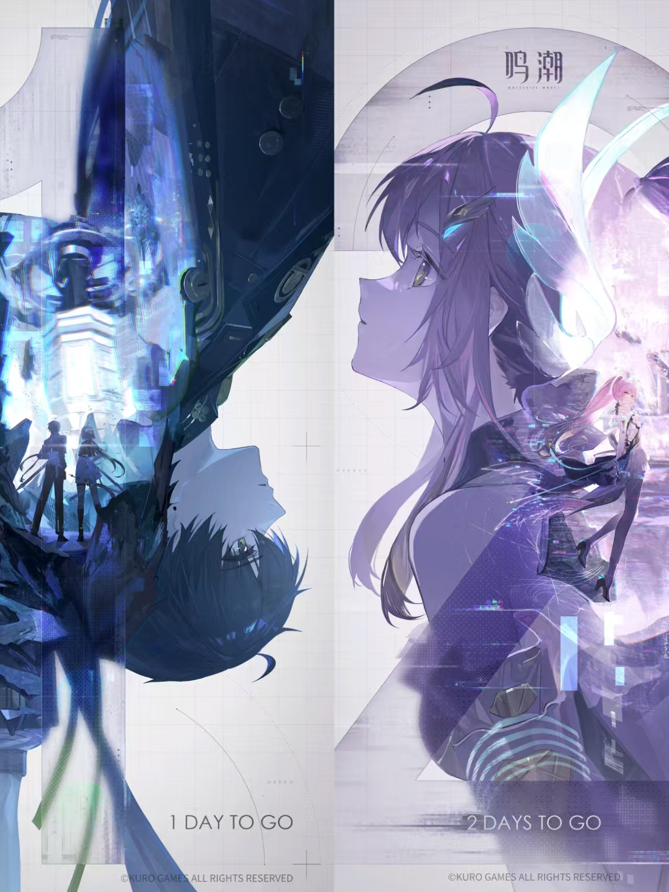

爱弥斯曾是星炬学院的隧者适格者，现已成为无人可见的“电子幽灵”。 她以活泼俏皮的姿态与身边的人们来往，兴趣爱好颇多，既享受着自己的校园生活，也喜爱和众人分享自己的快乐。
星炬学院拉贝尔学部的隧者适格者，如今已成为在星海轻歌的电子幽灵。
“调自深空联合：星炬学院 学生档案”
“共鸣能力检验报告 RA2362-G”
学生姓名：爱弥斯
是否具有适格者资质：是
共鸣能力概述：受试样本拉贝尔曲线呈稳定上升态，最终趋向稳定波动，检测结果判断为自然型共鸣者，声痕位于胸口。
根据入学前提交的个人档案与学生自述，对象▇▇▂▇▋▌▏▉█……很遗憾，这份报告现在已经没有参考价值了，毕竟是生前的记录了~就让本人来补充一下吧。现在的我，已经是隧者的共鸣者，声痕相比之前也发生了变化，但状态不算很稳定。能力……可以显化“隧者兵装”并与之融合，简单来说就是变身啦！当然，为了方便战斗，我也给机兵设计了一套自运转的逻辑，目前模拟配合起来的感受还不错，能够更大限度地利用光炮的覆盖范围。除此之外，我也能以电子幽灵的形式进入数据系统内部。不过，这或许不能称之为共鸣能力的一部分，将之归结于共鸣时的特殊状态带来的……▇▉▇▇▂▇